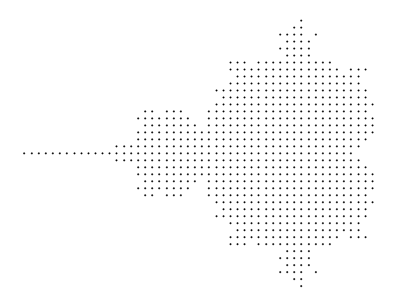

def sequence(c):
z = 0
while True:
yield z
z = z**2 +cAppendix M — Mandelbrot Set in Python
\(~\)
Original Author: Bartosz Zaczyński
\(~\)
M.1 The Boundary of Iterative Stability
- Formally, \(\,\)the Mandelbrot set is the set of complex numbers, \(\color{red}{c}\), for which an infinite sequence of numbers, \(z_0\), \(z_1\), \(\cdots\), \(z_n\), \(\cdots\), remains bounded
\[\begin{aligned} z_0 &= 0\\ z_{n+1} &= z_n^2 + c \end{aligned}\]
- The entire Mandelbrot set fits in a circle with a radius of two when depicted on the complex plane. This is a handy fact that’ll let you skip many unnecessary calculations for points that certainly don’t belong to the set
for n, z in enumerate(sequence(c=1)):
print(f'z({n}) = {z}')
if n >= 9:
breakz(0) = 0
z(1) = 1
z(2) = 2
z(3) = 5
z(4) = 26
z(5) = 677
z(6) = 458330
z(7) = 210066388901
z(8) = 44127887745906175987802
z(9) = 1947270476915296449559703445493848930452791205- Most numbers will make this sequence diverge to infinity. \(\,\)However, \(\,\)some will keep it stable by either converging the sequence to a single value or staying within a bounded range. Others will make the sequence periodically stable by cycling back and forth between the same few values. Stable and periodically stable values make up the Mandelbrot set
for n, z in enumerate(sequence(c=0)):
print(f'z({n}) = {z}')
if n >= 9:
breakz(0) = 0
z(1) = 0
z(2) = 0
z(3) = 0
z(4) = 0
z(5) = 0
z(6) = 0
z(7) = 0
z(8) = 0
z(9) = 0for n, z in enumerate(sequence(c=-1)):
print(f'z({n}) = {z}')
if n >= 9:
breakz(0) = 0
z(1) = -1
z(2) = 0
z(3) = -1
z(4) = 0
z(5) = -1
z(6) = 0
z(7) = -1
z(8) = 0
z(9) = -1It’s not obvious which numbers are stable and which aren’t, \(\,\)because the formula is sensitive to even the smallest change of the tested value, \(c\)
The fractal corresponding to the Mandelbrot set has a finite area estimated at
1.506484square units. Mathematicians haven’t pinpointed the exact number yet and don’t know whether it’s rational or not. On the other hand, the perimeter of the Mandelbrot set is infinite
M.2 Plotting the Mandelbrot Set Using Python’s Matplotlib
- To generate the initial set of candidate values, \(~\)you can take advantage of
np.linspace(), \(\,\)which creates evenly spaced numbers in a given range:
import numpy as np
#np.warnings.filterwarnings('ignore')
def complex_matrix(xmin, xmax, ymin, ymax, pixel_density):
re = np.linspace(xmin, xmax, int((xmax -xmin) *pixel_density))
im = np.linspace(ymin, ymax, int((ymax -ymin) *pixel_density))
return re[np.newaxis, :] + im[:, np.newaxis] *1jdef is_stable(c, num_iterations):
z = 0
for _ in range(num_iterations):
z = z**2 +c
return abs(z) <= 2M.2.1 Low-Resolution Scatter Plot
import matplotlib.pyplot as plt
c = complex_matrix(-2, 0.5, -1.5, 1.5, pixel_density=21)
members = c[is_stable(c, num_iterations=20)]
def plot_low_resolution_scatter():
plt.figure(figsize=(6, 8))
plt.scatter(members.real, members.imag, color='black', marker='x', s=1)
plt.gca().set_aspect('equal')
plt.axis('off')
plt.tight_layout()
plt.show()/var/folders/4x/8kn2nym12cn7x7qmg_6s4b8h0000gn/T/ipykernel_76102/2353567406.py:4: RuntimeWarning: overflow encountered in square
z = z**2 +c
/var/folders/4x/8kn2nym12cn7x7qmg_6s4b8h0000gn/T/ipykernel_76102/2353567406.py:4: RuntimeWarning: invalid value encountered in square
z = z**2 +cplot_low_resolution_scatter()
M.2.2 High-Resolution Black-and-White Visualization
c = complex_matrix(-2, 0.5, -1.5, 1.5, pixel_density=512)
def plot_high_resolution_black_and_white():
plt.figure(figsize=(6, 8))
plt.imshow(is_stable(c, num_iterations=20), cmap='binary')
plt.gca().set_aspect('equal')
plt.axis('off')
plt.tight_layout()
plt.show()plot_high_resolution_black_and_white()/var/folders/4x/8kn2nym12cn7x7qmg_6s4b8h0000gn/T/ipykernel_76102/2353567406.py:4: RuntimeWarning: overflow encountered in square
z = z**2 +c
/var/folders/4x/8kn2nym12cn7x7qmg_6s4b8h0000gn/T/ipykernel_76102/2353567406.py:4: RuntimeWarning: invalid value encountered in square
z = z**2 +cM.3 Drawing the Mandelbrot Set With Pillow
By replacing Matplotlib’s
plt.imshow()with a very similar call toPillow’s factory method:image = Image.fromarray(~is_stable(c, num_iterations=20)) # image.show() # for console display(image) # for jupyter notebookNotice the use of the bitwise not operator (
~) in front of your stability matrix, \(\,\)which inverts all of the Boolean values. \(\,\)This is so that the Mandelbrot set appears in black on a white background sincePillowassumes a black background by default
M.3.1 Finding Convergent Elements of the Set
from dataclasses import dataclass
@dataclass
class MandelbrotSet:
max_iterations: int
def __contains__(self, c: complex) -> bool:
z = 0
for _ in range(self.max_iterations):
z = z**2 +c
if abs(z) > 2:
return False
return Truemandelbrot_set = MandelbrotSet(max_iterations=30)0.26 in mandelbrot_setFalse0.25 in mandelbrot_setTruefrom PIL import Image
width, height = 512, 512
scale = 0.0055
BLACK_AND_WHITE = '1'
image = Image.new(mode=BLACK_AND_WHITE, size=(width, height))
for y in range(height):
for x in range(width):
c = scale *complex(x -width /1.35, height /2 -y)
image.putpixel((x, y), c not in mandelbrot_set)display(image)M.3.2 Measuring Divergence With the Escape Count
The number of iterations it takes to detect divergence is known as the escape count. \(\,\)We can use the escape count to introduce multiple levels of gray
However, \(\,\)it’s usually more convenient to deal with normalized escape counts so that their values are on a scale from zero to one regardless of the maximum number of iterations
@dataclass
class MandelbrotSet:
max_iterations: int
def __contains__(self, c: complex) -> bool:
return self.stability(c) == 1
def stability(self, c: complex) -> float:
return self.escape_count(c) /self.max_iterations
def escape_count(self, c: complex) -> int:
z = 0
for iteration in range(self.max_iterations):
z = z**2 +c
if abs(z) > 2:
return iteration
return self.max_iterationsmandelbrot_set = MandelbrotSet(max_iterations=30)mandelbrot_set.escape_count(0.25)30mandelbrot_set.stability(0.25)1.00.25 in mandelbrot_setTruemandelbrot_set.escape_count(0.26)29mandelbrot_set.stability(0.26)0.96666666666666670.26 in mandelbrot_setFalseThe updated implementation of the
MandelbrotSetclass allows for a grayscale visualization, which ties pixel intensity with stabilityBut you’ll need to change the pixel mode to
L, \(\,\)which stands for luminance. \(\,\)In this mode, \(\,\)each pixel takes an integer value between0and255, \(\,\)so you’ll also need to scale the fractional stability appropriately:
width, height = 512, 512
scale = 0.0055
GRAYSCALE = 'L'
image = Image.new(mode=GRAYSCALE, size=(width, height))
for y in range(height):
for x in range(width):
c = scale *complex(x -width /1.35, height /2 -y)
instability = 1 -mandelbrot_set.stability(c)
image.putpixel((x, y), int(instability *255))display(image)M.3.3 Smoothing Out the Banding Artifacts
Getting rid of color banding from the Mandelbrot set’s exterior boils down to using fractional escape counts.
One way to interpolate their intermediate values is to use logarithms
from math import log
@dataclass
class MandelbrotSet:
max_iterations: int
escape_radius: float = 2.0
def __contains__(self, c: complex) -> bool:
return self.stability(c) == 1
def stability(self, c: complex, smooth=False, clamp=True) -> float:
value = self.escape_count(c, smooth) /self.max_iterations
return max(0.0, min(value, 1.0)) if clamp else value
def escape_count(self, c: complex, smooth=False) -> int or float:
z = 0
for iteration in range(self.max_iterations):
z = z**2 +c
if abs(z) > self.escape_radius:
if smooth:
return iteration +1 -log(log(abs(z))) /log(2)
return iteration
return self.max_iterationsmandelbrot_set = MandelbrotSet(max_iterations=20, escape_radius=1000.0)
width, height = 512, 512
scale = 0.0055
GRAYSCALE = 'L'
image = Image.new(mode=GRAYSCALE, size=(width, height))
for y in range(height):
for x in range(width):
c = scale *complex(x -width /1.35, height /2 -y)
instability = 1 -mandelbrot_set.stability(c, smooth=True)
image.putpixel((x, y), int(instability *255))display(image)M.3.4 Translating Between Set Elements and Pixels
Unlike the logarithms before, \(\,\)the math for scaling and translating the image isn’t terribly difficult. However, \(\,\)it adds a bit of code complexity
You can build a smart pixel data type that’ll encapsulate the conversion between the coordinate systems, account for scaling, and handle the colors
@dataclass
class Viewport:
image: Image.Image
center: complex
width: float
@property
def scale(self):
return self.width /self.image.width
@property
def height(self):
return self.scale *self.image.height
@property
def offset(self):
return self.center +complex(-self.width, self.height) /2
def __iter__(self):
for y in range(self.image.height):
for x in range(self.image.width):
yield Pixel(self, x, y)@dataclass
class Pixel:
viewport: Viewport
x: int
y: int
@property
def color(self):
return self.viewport.image.getpixel((self.x, self.y))
@color.setter
def color(self, value):
self.viewport.image.putpixel((self.x, self.y), value)
def __complex__(self):
return complex(self.x, -self.y) *self.viewport.scale +self.viewport.offsetmandelbrot_set = MandelbrotSet(max_iterations=256, escape_radius=1000.0)
image = Image.new(mode='L', size=(512, 512))
for pixel in Viewport(image, center=-0.7435 +0.1314j, width=0.002):
c = complex(pixel)
instability = 1 -mandelbrot_set.stability(c, smooth=True)
pixel.color = int(instability *255)- The
viewportspans0.002world units and is centered at-0.7435 +0.1314j, \(\,\)which is close to a Misiurewicz point that produces a beautiful spiral
display(image)from PIL import ImageEnhance
enhancer = ImageEnhance.Brightness(image)
display(enhancer.enhance(1.4))
- We can find many more unique points producing such spectacular results. \(\,\)Wikipedia hosts an entire image gallery of various details of the Mandelbrot set that are worth exploring
mandelbrot_set = MandelbrotSet(max_iterations=256, escape_radius=1000.0)
image = Image.new(mode='L', size=(512, 512))
for pixel in Viewport(image, center=-0.74364990 +0.13188204j, width=0.00073801):
c = complex(pixel)
instability = 1 -mandelbrot_set.stability(c, smooth=True)
pixel.color = int(instability *255)enhancer = ImageEnhance.Brightness(image)
display(enhancer.enhance(1.4))M.4 Making an Artistic Representation of the Mandelbrot Set
- While there are many algorithms for plotting the Mandelbrot set in aesthetically pleasing ways, \(\,\)our imagination is the only limit!
M.4.1 Color Palette
To use more colors, \(\,\)you’ll need to create your image in the RGB mode first, \(\,\)which will allocate 24 bits per pixel:
image = Image.new(mode='RGB', size=(width, height))From now on, \(\,\)
Pillowwill represent every pixel as a tuple comprised of the red, green, and blue (RGB) color channelsMatplotliblibrary includes several colormaps with normalized color channels. \(\,\)Some colormaps are fixed lists of colors, \(\,\)while others are able to interpolate values given as a parameter
import matplotlib as mpl
cmap = mpl.colormaps['twilight']
colormap = cmap(np.linspace(0, 1, 256))
colormap[:5]array([[0.88575016, 0.85000925, 0.88797365, 1. ],
[0.88172231, 0.85127594, 0.88638057, 1. ],
[0.87724881, 0.85187028, 0.8843412 , 1. ],
[0.87233134, 0.85180165, 0.88189704, 1. ],
[0.86696016, 0.85108961, 0.87909767, 1. ]])Pillowonly understands integers in the range of0through255for the color channels. \(\,\)We need another function that’ll reverse the normalization process to make the Pillow library happy:
def denormalize(colormap):
return [tuple(int(channel *255) for channel in color) for color in colormap]
palette = denormalize(colormap)
palette[:5] [(225, 216, 226, 255),
(224, 217, 226, 255),
(223, 217, 225, 255),
(222, 217, 224, 255),
(221, 217, 224, 255)]The
twilightcolormap is a list of 510 colors. \(\,\)After callingdenormalize()on it, \(\,\)you’ll get a color palette suitable for your painting functionIf you’d like to test out a couple of different palettes, \(\,\)then it might be convenient to introduce a helper function to avoid retyping the same commands over and over again:
def paint(mandelbrot_set, viewport, palette, smooth):
for pixel in viewport:
stability = mandelbrot_set.stability(complex(pixel), smooth)
index = int(min(stability *len(palette), len(palette) -1))
pixel.color = palette[index % len(palette)]- The number of colors in your palette doesn’t necessarily have to equal the maximum number of iterations. \(\,\)After all, it’s unknown how many stability values there’ll be until we run the recursive formula. \(\,\)When we enable smoothing, \(\,\)the number of fractional escape counts can be greater than the number of iterations!
mandelbrot_set = MandelbrotSet(max_iterations=512, escape_radius=1000.0)
image = Image.new(mode='RGB', size=(512, 512))
viewport = Viewport(image, center=-0.7435 +0.1314j, width=0.002)
paint(mandelbrot_set, viewport, palette, smooth=True)
display(image)- Feel free to try other color palettes included in
Matplotlibor one of the third-party libraries that they mention in the documentation. \(\,\)Additionally, \(\,\)Matplotliblets you reverse the color order by appending the_rsuffix to a colormap’s name
cmap = mpl.colormaps['twilight_r']
colormap = cmap(np.linspace(0, 1, 256))
palette = denormalize(colormap)
paint(mandelbrot_set, viewport, palette, smooth=True)
display(image)image = Image.new(mode='RGB', size=(768, 768))
viewport = Viewport(image, center=-0.743643135 +0.131825963j, width= 0.000014628)
cmap = mpl.colormaps['plasma']
colormap = cmap(np.linspace(0, 1, 256))
palette = denormalize(colormap)
paint(mandelbrot_set, viewport, palette, smooth=True)
display(image)- Suppose you wanted to emphasize the fractal’s edge. In such a case, you can divide the fractal into three parts and assign different colors to each:
exterior = [(1, 1, 1)] *50
interior = [(1, 1, 1)] *5
gray_area = [(1 - i /44,) *3 for i in range(45)]
palette = denormalize(exterior +gray_area +interior)
mandelbrot_set = MandelbrotSet(max_iterations=20, escape_radius=1000.0)
viewport = Viewport(image, center=-0.75, width=2.5)
paint(mandelbrot_set, viewport, palette, smooth=True)
display(image)M.4.2 Color Gradient
import numpy as np
from scipy.interpolate import interp1d
def make_gradient(colors, interpolation='linear'):
X = [i /(len(colors) -1) for i in range(len(colors))]
Y = [[color[i] for color in colors] for i in range(3)]
channels = [interp1d(X, y, kind=interpolation) for y in Y]
return lambda x: [np.clip(channel(x), 0, 1) for channel in channels]black = (0, 0, 0)
blue = (0, 0, 1)
maroon = (0.5, 0, 0)
navy = (0, 0, 0.5)
red = (1, 0, 0)
colors = [black, navy, blue, maroon, red, black]
gradient = make_gradient(colors, interpolation='cubic')num_colors = 256
palette = denormalize([gradient(i /num_colors) for i in range(num_colors)])image = Image.new(mode='RGB', size=(768, 768))
mandelbrot_set = MandelbrotSet(max_iterations=20, escape_radius=1000)
viewport = Viewport(image, center=-0.75, width=2.5)
paint(mandelbrot_set, viewport, palette, smooth=True)
display(image)M.4.3 Color Model
- There are alternative color models that let you express the same concept. \(\,\)One is the Hue, Saturation, Brightness (HSB) color model, also known as Hue, Saturation, Value (HSV)

The three HSB coordinates are:
- Hue: The angle measured counterclockwise between
0°and360° - Saturation: The radius of the cylinder between
0%and100% - Brightness: The height of the cylinder between
0%and100%
To use such coordinates in
Pillow, \(~\)we must translate them to a tuple of RGB values in the familiar range of0to255:- Hue: The angle measured counterclockwise between
from PIL.ImageColor import getrgb
def hsb(hue_degrees: int, saturation: float, brightness: float):
return getrgb(
f"hsv({hue_degrees % 360},"
f"{saturation *100}%,"
f"{brightness *100}%)"
)
image = Image.new(mode='RGB', size=(768, 768))
mandelbrot_set = MandelbrotSet(max_iterations=20, escape_radius=1000.0)
for pixel in Viewport(image, center=-0.75, width=2.5):
stability = mandelbrot_set.stability(complex(pixel), smooth=True)
pixel.color = (0, 0, 0) if stability == 1 else hsb(
hue_degrees=int((1 - stability) * 360),
saturation=1 - stability,
brightness=1,
)
display(image) M.5 Conclusions
In this appendix, \(\,\)we learned how to:
- Apply complex numbers to a practical problem
- Find members of the Mandelbrot set
- Draw these sets as fractals using
MatplotlibandPillow - Make a colorful artistic representation of the fractals
Now we know how to use Python to plot and draw the famous fractal discovered by Benoît Mandelbrot